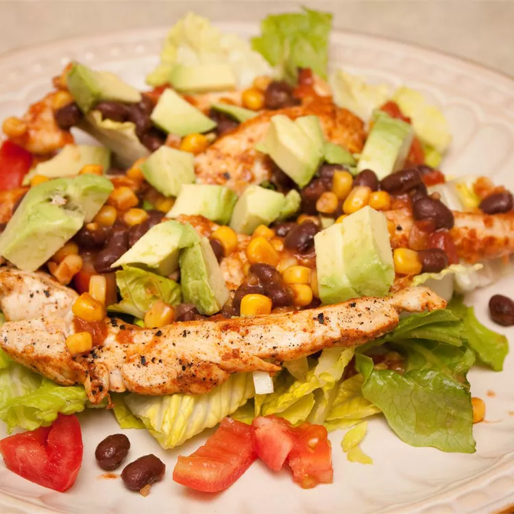

Chicken Fiesta Salad

Description
This is an attractive and zesty all in one dish.
It's full of veggies and chicken, and loaded with flavor.
A quick fix for a long day. If desired, top with shredded cheese and tortilla chips.
Easily turn this into a wrap with your favorite tortilla!
Ingredients
- 2 skinless, boneless chicken breasts havles
- 1 (1.27 ounce) packet dry fajita seasoning, divided
- 1 tablespoon vegetable oil
- 1 (15 ounce) can black beans, rinsed and drained
- 1 (11 ounce) can Mexican-style corn
- 1/2 cup salsa
- 1 (10 ounce) package mixed salad greens
- 1 onion, chopped
- 1 tomato, cut into wedges
Steps
- Rub chicken evenly with 1/2 the fajita seasoning. Heat the oil in a skillet over medium heat,
and cook the chicken 8 minutes on each side, or until juices run clear; set aside.
- In a large saucepan, mix beans, corn, salsa and other 1/2 of fajita seasoning.
Heat over medium heat until warm.
- Prepare the salad by tossing the greens, onion and tomato.
Top salad with chicken and dress with the bean and corn mixture.